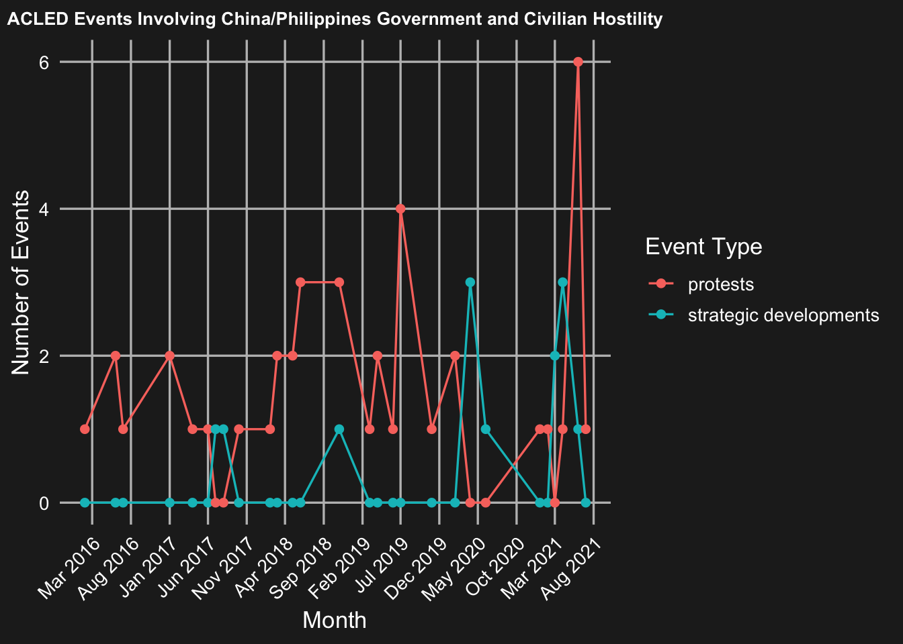

con <- dbConnect(SQLite(), "../data/acled_data.db")
acled_data <- dbReadTable(con, "acled_data.db")
dbDisconnect(con)
acled_data_c<- acled_data|>
mutate(
event_date = ymd(event_date),
month = as.Date(month))|>
filter(event_type %in% c("protests", "strategic developments"))
acled_data_c |>
count(month, event_type, name = "n_events") |>
complete(month, event_type, fill = list(n_events = 0))|>
ggplot(aes(x = month, y = n_events, color = event_type)) +
geom_line() +
geom_point() +
scale_x_date(date_breaks = "5 months", date_labels = "%b %Y") +
labs(
title = "ACLED Events Involving China/Philippines Government and Civilian Hostility",
x = "Month",
y = "Number of Events",
color = "Event Type"
) +
theme_minimal(base_size = 13) +
theme(
panel.background = element_rect(fill = "black", color = NA),
plot.background = element_rect(fill = "black", color = NA),
legend.background = element_rect(fill = "black", color = NA),
panel.grid.major = element_line(color = "grey20"),
panel.grid.minor = element_blank(),
axis.text = element_text(color = "white"),
axis.title = element_text(color = "white"),
legend.text = element_text(color = "white"),
legend.title = element_text(color = "white"),
strip.text = element_text(color = "white"),
plot.title = element_text(color = "white", face = "bold", size = 10, hjust = 0.5),
plot.subtitle = element_text(color = "white", size = 8, hjust = 0.5),
axis.text.x = element_text(angle = 45, hjust = 1)
)
#ggsave("../visualizations/acled_event_time.png")